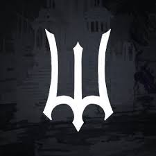

Roblox Deepwoken is hardcore fantasy game developed by Vows by the Sea, a subdivision of Monad Studios featuring an open world element, permadeath, a challenging combat system, and peril around every corner. Dying in deepwoken would result in the permanent loss of your character. Losing characters is a part of the game and should be expected.
Copyright © Dylan John M. Tee 9-Lithium.